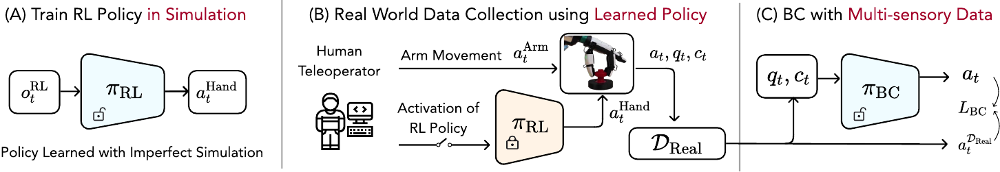
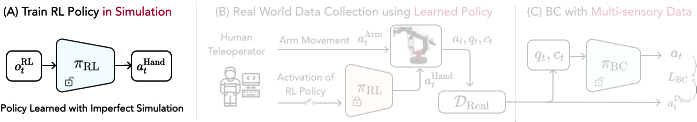
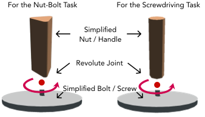
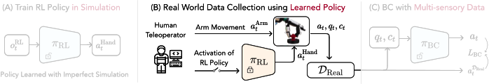
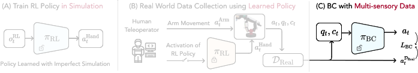

We learn rotational motion in a simplified simulator, use it for skill-based teleoperation to collect multisensory data, and train a policy that performs screwdriving and nut-bolt fastening in the real world.


We train a transferable rotational motion policy in simulator.


We use the trained rotational motion policy for skill-based teleoperation to collect multisensory data.

We distill the multisensory data into single policy for screwdriving and nut-bolt fastening.
We compare the performance of the tactile-aware and non-tactile policies without temporal context below. Tactile feedback is best to interpreted with temporal context.
This work is supported in part by the program "Design of Robustly Implementable Autonomous and Intelligent Machines (TIAMAT)", Defense Advanced Research Projects Agency award number HR00112490425. We thank Mengda Xu for their valuable feedback.